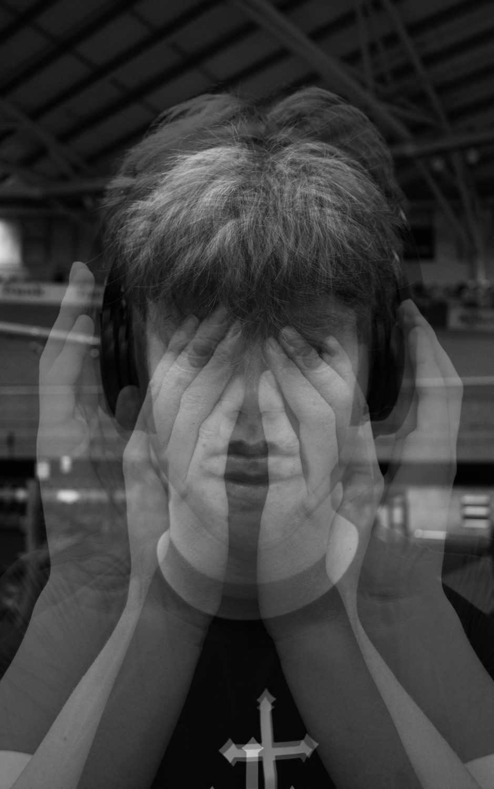
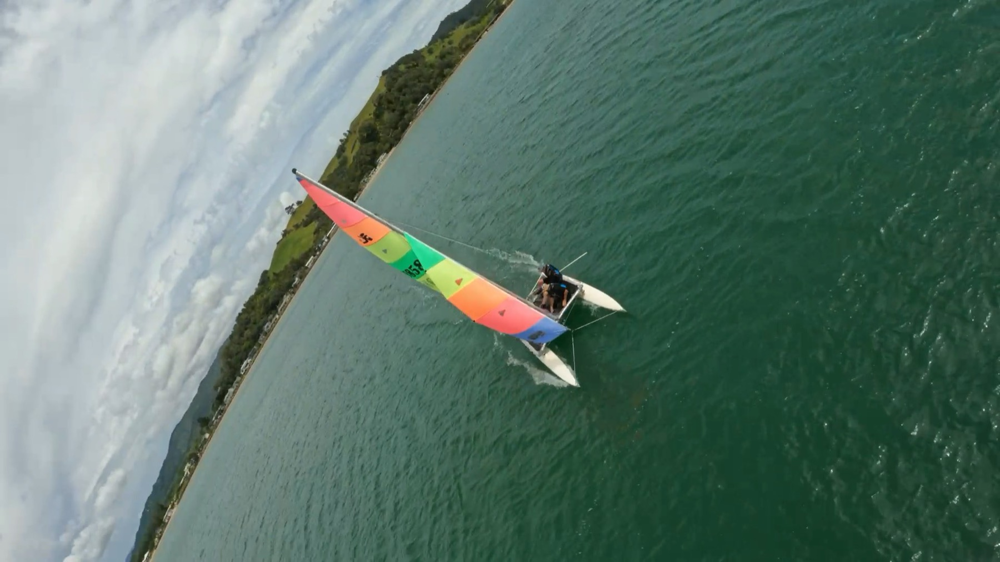
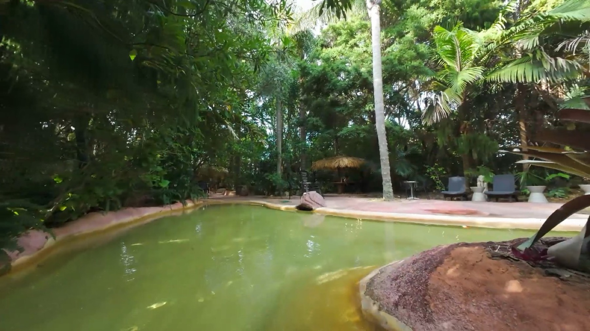
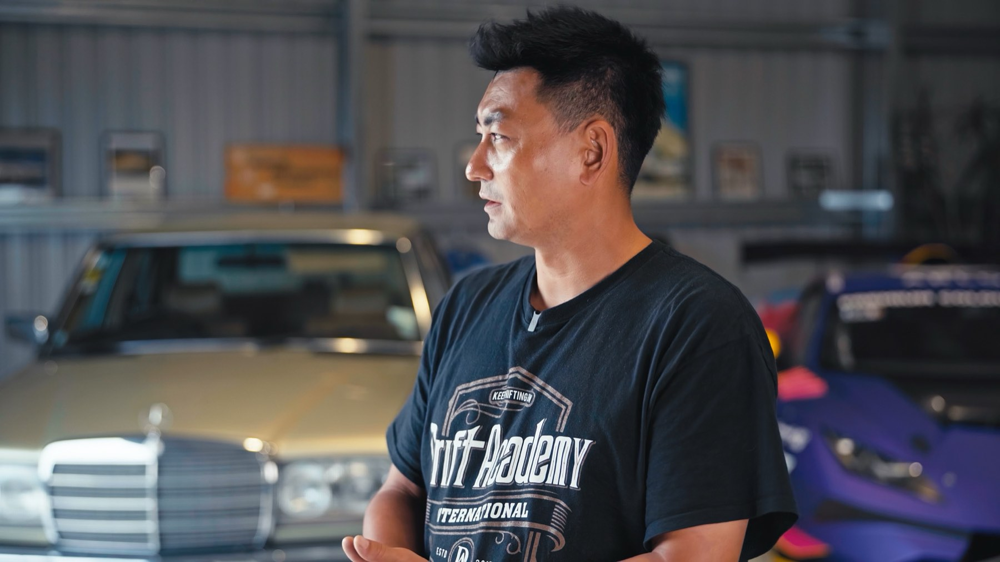

Layering
Torn-paper photomontage
View case study ›A university portfolio built around clarity — no noise, no decoration for its own sake. Just the work.

This photograph explores the internal and external layers of identity and can reveal the contrast between how a person feels within themselves and how they present to the world. Through this visual symbolism, the image communicates hidden emotions, values, memories, and social expectations, showing identity as complex, evolving, and deeply personal.
From BW Hands — black & white double-exposure portraits.
Torn-paper photomontage
View case study ›B&W double-exposure portraits
View case study ›Commercial customer-story films
View case study ›On-the-water documentary
View case study ›One-take day spa films
View case study ›Short bio goes here — background, what you studied, what you're looking for. Keep it to 2–3 sentences; let the work speak louder.






